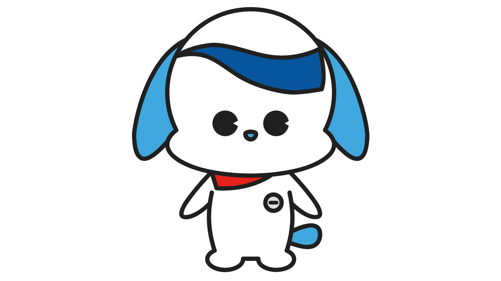

大塚ウエルネスベンディング株式会社
イメージキャラクターデザインコンペ
校内企業プロジェクト「イメージキャラクターデザインコンペ」にて作成。大塚グループの大塚ウエルネスベンディング株式会社からのご依頼で制作した作品です。こちらの作品は企業様から最優秀賞を頂いた作品になります。
制作年度 ：2022年度
ご依頼主 ：大塚ウエルネスベンディング株式会社
制作ツール：Illustrator
制作期間 ：4ヶ月
評価 ：最優秀賞
使用シーン：社内外資料・HP (予定)
大塚ウエルネスベンディング株式会社HPへ
校内企業プロジェクトにて制作。最優秀賞をいただきました。 プロジェクト内容は”自動販売機事業を通して皆様の健康に貢献する!”ことが伝わるキャラクターの制作。
必須表現は 3 つあり、
1つ目はキャラクターから健康をイメージできること。
2つ目は大塚の自販機からイメージ できるもの。
3つ目は自販機の見た目はあまり意識しすぎないこと。
の3つでした。
コーポレートシンボルで表現されている『開放感』、『自由』、『知性』のイメージがある犬をキャラクターに採用し、根源となるエネルギーをバンダナ、サンバイザーをポカリスエットをおもわせるような表現にしました。
このプロジェクトを通して、デザインをする上で「しっかりと下調べを行う・客観的な視点を持つこと」が大切であると感じました。